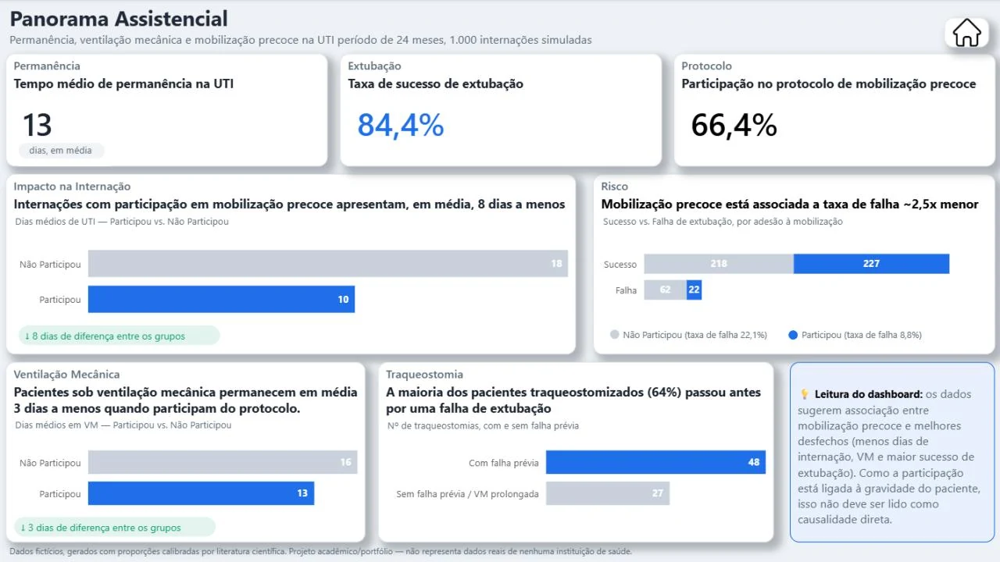

Jornada do Paciente na UTI
Projeto autoral · SQL, modelagem e Power BI
Problema: em UTIs, indicadores como ventilação mecânica, mobilização precoce e extubação ficam em planilhas separadas, e ninguém consegue reconstruir a jornada completa do paciente.
O que fiz: modelei do zero um banco relacional com 5 entidades, gerei uma base sintética de 1.000 internações calibrada por literatura brasileira, escrevi consultas com window functions e 9 views, e montei um dashboard de 3 páginas com consulta da jornada individual por prontuário.
18 → 10 diaspermanência na UTI com mobilização precoce
22,1% → 8,8%falha de extubação com mobilização precoce
1.000internações simuladas
Dados 100% fictícios. Os resultados mostram associação, não causalidade: pacientes mais graves participam menos do protocolo e têm piores desfechos de qualquer forma.